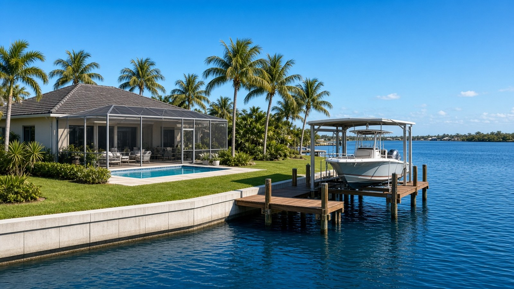

Buying a Waterfront Home in Punta Gorda

Punta Gorda & Charlotte County, FL
Quick Answer
A waterfront home is a house, a seawall, a dock, and a route.
In Punta Gorda, waterfront can mean a sailboat canal, a powerboat canal behind a lock, a marina slip, or a lake view. Before you shop, decide what boat you own and how you want to use it. Then check the seawall, dock, permits, flood zone, and the actual route to open water.
If you are searching for waterfront homes for sale in Punta Gorda, match the type of water access to your boat first, then compare houses.
What waterfront actually means here
The word waterfront covers very different properties in Charlotte County. A canal house in Punta Gorda Isles is a different purchase from a canal home behind the lock in South Gulf Cove, from a villa with a slip at Burnt Store Marina, and from a golf-course lake lot in Rotonda West. The table below sorts the main types by what to check.
| Waterfront Types in Charlotte County: What to Check | ||
|---|---|---|
| Type | First check | How to read it |
| Open tidal canal, sailboat or powerboat | Check depth and clearance | Common in Punta Gorda Isles and Burnt Store Isles. Water rises and falls with the tide. Ask about canal depth, the route and any fixed bridges to open water, and the run to Charlotte Harbor for your boat. |
| Locked canal | Check the lock | Used in South Gulf Cove, where a county-run lock separates the canals from tidal water. The canal level is managed, and every trip includes a lock cycle. Ask for current lock status. |
| Marina slip | Check the slip documents | Common in Burnt Store Marina. A slip may be owned, leased, or sold separately from the home, and fees and transfer terms vary. |
| Harbor or river frontage | Check exposure and permits | Open water means wind, waves, and more exposure. Docks and seawalls need permits and often state or federal approvals. |
| Lake or golf-course water | Check what it connects to | A water view is not Gulf access. Many lakes and ponds do not connect to tidal water, so ask exactly what the water is and whether a boat can use it. |
Sources: City of Punta Gorda canal program pages; Charlotte County Public Works; Rotonda West Association. Always verify access for the specific property and the specific boat.
Our Punta Gorda real estate guide explains how these areas fit together. If you are comparing, ask for the same set of facts for every property: canal depth, route to open water, seawall age, dock and lift permits, flood zone, and the year the house was built.
A few facts to put the seawall question in context
Seawalls and canals are not abstract. These figures describe the city's canal districts and the permit rules the county publishes.
| Waterfront Ownership: Context Figures | ||
|---|---|---|
| Topic | Figure | How to read it |
| Punta Gorda Isles | About 45 miles of canals | City of Punta Gorda: about 91 miles of seawall, constructed from the late 1950s through the mid 1970s. The city maintains and replaces city-maintained seawalls through canal maintenance assessments. |
| Burnt Store Isles | About 9 miles of canals | City of Punta Gorda: about 18 miles of seawall, constructed in the mid 1970s. |
| Seawall replacement | About 3 to 4 weeks | City estimate for one residence, weather permitting. The city gives advance notice about sprinklers, utilities, docks, boat lifts, and landscaping. |
| Residential dock or seawall permit | Engineered drawings required | Charlotte County requires a construction permit with signed and sealed engineered drawings, a site plan, a survey, and any required state or federal approvals. |
| Manatee Protection Plan | 5 or more slips | Charlotte County's plan applies to new or expanded boat facilities with five or more slips. A single-family dock with four or fewer slips is exempt from the siting review, but it must still meet all other rules. |
| Median owner-reported home value, Punta Gorda city | $518,100 | U.S. Census Bureau, American Community Survey (ACS) 5-year estimates for 2020-2024, with a margin of error of about $41,000. It covers all housing types in the city, not only waterfront. |
Sources: City of Punta Gorda Public Works and canal program pages; Charlotte County Community Development and Natural Resources; U.S. Census Bureau ACS 2020-2024. Figures are context only, not a substitute for a survey and inspection of a specific property.
Key Takeaways
- Waterfront means different things: tidal canals, locked canals, marina slips, harbor frontage, and lake views. Match the type to the boat you own.
- In Punta Gorda Isles and Burnt Store Isles, the city maintains seawalls through canal maintenance district assessments. Ask for the current assessment and the age of the wall.
- Charlotte County requires a construction permit with signed and sealed engineered drawings, a site plan, a survey, and any state or federal approvals for a residential dock or seawall.
- A single-family dock with four or fewer slips is exempt from the county Manatee Protection Plan siting review, but it must still meet all applicable rules.
- FEMA's Risk Rating 2.0 prices flood insurance using ground elevation, first-floor height, distance to flooding sources, foundation type, and other factors. An elevation certificate is optional but can help.
- The ACS 2020-2024 median owner-reported value in Punta Gorda city is $518,100. It is a survey figure covering all housing types, not a waterfront price.
Sailboat or powerboat: the questions that decide value
Boat access is the single most important feature of a waterfront home, and the least visible on a listing. For a sailboat, the questions are mast height, keel depth, and any fixed bridge or overhead clearance between the lot and open water. For a powerboat, they are draft, beam, the lift's capacity, and the run to the harbor or the Gulf. For both, ask about the canal depth right in front of the dock. A depth that works at high tide can be a problem at low tide on an open-tidal canal, and the city notes that property owners can hire their own dredging near a private dock at their own expense.
Do not rely on a listing's words. Ask the seller how the boat is kept, and ask for a boating route plan. When it matters, do a test run with the boat you own or with a captain. Two homes can look identical on a map and perform very differently on the water.
The seawall, dock, and lift: part of the property, not extras
A waterfront house is inspected as a package. The seawall holds the lot together, the dock and lift are where the boat lives, and each has its own age, permit history, and cost. In the city's canal districts, the city's Canal Maintenance Division maintains and replaces the seawalls, and its annual assessment covers them. Elsewhere, ownership may differ, so ask exactly who is responsible and get it in writing.
Charlotte County's permit pages for residential docks and seawalls say that new or replacement work needs a construction permit with signed and sealed engineered drawings, a site plan, a survey, and any required approvals from state or federal agencies. So ask the seller for permits for the dock, the lift, the seawall, and any boathouse or covering, and ask whether any of them were built without a permit. An unpermitted structure can become your problem at closing or at resale. Our guide to buying vacant land covers the rest of the permit path for a new build.
Flood zones, storms, and insurance
Waterfront homes carry flood and storm questions that inland homes do not. Hurricane Ian made landfall on Cayo Costa on September 28, 2022, and then made a second landfall near Punta Gorda, according to the National Hurricane Center's final report. Before landfall, the Center's advisories forecast storm-surge inundation of 12 to 18 feet above ground for Charlotte Harbor. That was a forecast, not a measurement of what happened at any one address, but it shows why flood risk is not optional homework. Hurricane Charley made landfall near Cayo Costa on August 13, 2004, as a Category 4 hurricane.
FEMA's Risk Rating 2.0 prices flood insurance for each property using factors such as distance to flooding sources, ground elevation, first-floor height, foundation type, construction, the number of floors, replacement cost, coverage limits, and deductibles. An elevation certificate is optional, but FEMA may use it to establish a more favorable first-floor height. Ask for any certificate the seller has, and get quotes early. Costs change and are specific to each house, so this guide will not invent a premium.
Buying a waterfront home in Punta Gorda: a few local realities
Homestead. If the home will be your primary residence, ask the Charlotte County Property Appraiser about Florida's homestead exemption, up to $50,000 of assessed value with the first $25,000 applying to all property taxes. Save Our Homes limits annual assessed-value increases to the lesser of 3 percent or the change in the Consumer Price Index, which is 2.7 percent for 2026. You must own and live in the home on January 1 and apply by March 1.
Price context. The FHFA house-price index for the Punta Gorda metro area was 391.34 in the second quarter of 2026, down 0.2 percent from a year earlier and 7.7 percent below the second quarter of 2024. It is a repeat-transaction index for the whole metro area, not a waterfront sale price. Ask for recent comparable sales with the same type of water access, canal width, and seawall condition. When you are ready, see the buyers page, and the things you should not do when buying a home post is a good checklist before you write an offer.
Frequently asked questions
What should I check on a waterfront home in Punta Gorda?
Check the type of water access, canal depth, the route and any fixed clearances to open water, the seawall's age and who maintains it, dock and lift permits, the FEMA flood zone, and the insurance quote. Inspect the water side as part of the home inspection.
Who maintains seawalls in Punta Gorda Isles and Burnt Store Isles?
The City of Punta Gorda's Canal Maintenance Division maintains and replaces city-maintained seawalls in its two canal districts, funded by canal maintenance assessments. Always confirm responsibility for the specific property.
Do I need a permit for a dock or seawall in Charlotte County?
Yes. The county requires a construction permit with signed and sealed engineered drawings, a site plan, a survey, and any required state or federal approvals. Ask the seller for permits for existing structures.
What is the difference between a sailboat canal and a powerboat canal?
Mostly depth and clearance. A sailboat needs enough canal depth for its keel and a route without fixed obstacles to its mast height. A powerboat is more flexible but still needs depth for its draft and lift. Verify the route for your boat.
Does every waterfront home have Gulf access?
No. Some canals connect to tidal water, some sit behind a lock, some are inside a marina, and some water is a lake that does not connect to the Gulf at all. Ask what the water is and test the route.
How is flood insurance priced for a waterfront home?
FEMA's Risk Rating 2.0 uses the property's flood risk and building characteristics, including distance to flooding sources, ground elevation, first-floor height, foundation type, and construction, plus coverage choices. An elevation certificate can help the quote.
Is a waterfront home in Punta Gorda a good investment?
We do not promise outcomes. Waterfront value depends on access, condition, and the market, and the public price data are regional. Ask for recent comparable sales for the same type of water access before you decide.
Talk with The Helgemo Team
If you are shopping for a waterfront home in Punta Gorda, talk with a team that knows the canals, the seawalls, and the permit process in person. Call or text The Helgemo Team at (941) 770-2275, or visit the contact page. The office is at 320 Cross Street, Punta Gorda, Florida 33950. You can also meet Brian Helgemo or read more about the team.
Related Reading
- Living in Punta Gorda Isles
- South Gulf Cove: a local living guide
- Burnt Store Marina homes for sale: a local guide
- Buying vacant land in Punta Gorda
- A Local Guide to Punta Gorda Real Estate
Thinking About Buying or Selling?
If you are buying, selling, or just trying to understand waterfront access, talk with a team that works this market in person. Call or text The Helgemo Team at (941) 770-2275.
Sources: City of Punta Gorda, Canals; City of Punta Gorda, Canal Maintenance: Punta Gorda Isles; Charlotte County, Residential Dock permits; Charlotte County, Residential Seawall permits; Charlotte County, Species Permitting and Manatee Protection Plan; Charlotte County, South Gulf Cove Boat Lock; FEMA, NFIP Risk Rating 2.0 pricing approach; National Hurricane Center, Tropical Cyclone Report: Hurricane Ian; National Hurricane Center, Hurricane Ian advisory, 9 a.m. EDT September 28, 2022; National Hurricane Center, Tropical Cyclone Report: Hurricane Charley; U.S. Census Bureau, American Community Survey 2020-2024 estimates for Punta Gorda city, via Census Reporter; Florida Department of Revenue, Property Tax Information for Homestead Exemption; Florida Department of Revenue, Save Our Homes; Federal Housing Finance Agency all-transactions House Price Index, Punta Gorda, FL metropolitan area, Q2 2026. This post is general information, not legal or engineering advice. Permit rules change, so confirm current requirements with Charlotte County or the city, and verify access and structures for the specific property. Data and sources reviewed November 10, 2026.